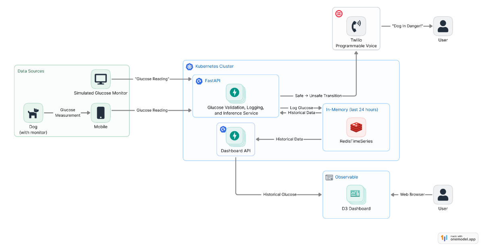

GlycoAhead
Low-Latency Early Warning System for Canine Glucose Monitoring
Harnessing AI-powered protection for pets, so families can care with more confidence and peace of mind.
User Research
These owner experiences shaped the problem definition and guided the design of GlycoAhead.
I haven’t been sleeping well. I fear I might miss my dog’s overnight hypoglycemic crash.
The device crashes in critical situations — when my dog’s glucose level fluctuates or starts to decline fast. I am not able to get essential information when I need it desperately.
I don’t find the device trustworthy, but it’s the only option that I can take.
Features We Deliver
A focused first version centered on earlier warnings, interpretable outputs, and practical pet-owner usability.
Predicts the future glucose category from recent glucose behavior using a 30-minute input window and a 15-minute-ahead prediction target.
Uses machine learning models to classify likely future glucose states and surface early signs of hypoglycemic and hyperglycemic risk.
Designed to help owners quickly see current status and revisit historical patterns in their pet’s glucose fluctuations.
Extends beyond sparse observed readings by reconstructing minute-level signals, enabling more timely alerts and intervention opportunities.
How It Works
Deployment architecture from glucose input to predictive warning output.
GlycoAhead combines sensor data processing, interpolation, feature engineering, and predictive modeling into a streamlined early-warning workflow.

Demo
A quick look at the GlycoAhead experience in action.
Technical Highlights
Core modeling and evaluation choices that make the project robust and practical.
Careful data splitting and interpolation help preserve realistic temporal patterns while creating usable minute-level signals.
Evaluation is designed to test generalization across dogs, not just repeated performance on the same pet.
Best model achieved high accuracy (0.954) and recall (0.910), supporting dependable future-state detection.
Team Members
Master of Information and Data Science, UC Berkeley